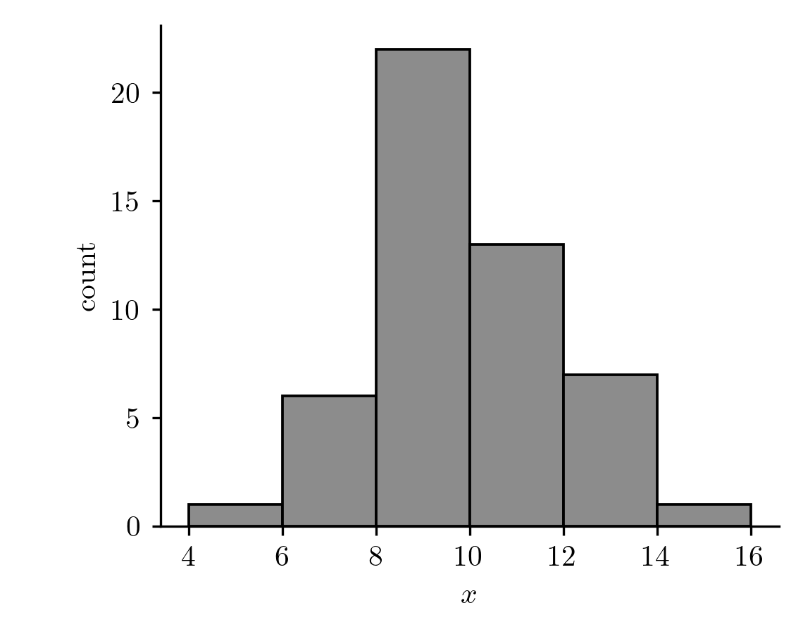

03wk-1: 퀴즈1
문제1
어느 공장에서 만드는 나사의 길이는 평균 \(\mu\), 표준편차 \(\sigma\) 인 분포를 따른다고 하자. 그 공장에서 나사 10개를 뽑아 길이를 재니 평균이 \(20.3\) mm 였다. 다음 중 올바른 진술을 모두 고르라.
- 재석: “\(20.3\) 은 표본평균이다.”
- 동엽: “\(\mu\) 는 모평균이고, 우리는 그 값을 모른다.”
- 호동: “10개를 다시 뽑으면 \(20.3\) 은 바뀌지만 \(\mu\) 는 그대로다.”
- 효리: “10개를 더 뽑아 20개로 하면 \(\mu\) 가 \(20.3\) 쪽으로 가까워진다.”
1 · 2 · 3
문제2
\(X_1, X_2 \overset{i.i.d.}{\sim} Ber(\theta)\) 라고 하자. 다음을 구하라. (값이 \(\theta\) 의 식으로 나오는 것은 식으로 쓰라.)
(1) \(L(0.5 \mid x_1=0,\ x_2=1)\)
(2) \(L(0.5 \mid x_1+x_2=1)\)
(3) \(L(0.5 \mid \bar{x}=0.4)\)
(4) \(L(\theta \mid \bar{x}=0.5)\)
(5) \(L(\theta \mid \bar{x}=0)\)
(1) \(0.25\) (2) \(0.5\) (3) \(0\) (4) \(2\theta(1-\theta)\) (5) \((1-\theta)^2\)
문제3
동전을 8번 던져 아래와 같은 결과를 얻었다.
\[x_1=0,\quad x_2=1,\quad x_3=0,\quad x_4=0,\quad x_5=1,\quad x_6=0,\quad x_7=0,\quad x_8=0\]
\(X_1,\dots,X_8 \overset{i.i.d.}{\sim} Ber(\theta)\) 라고 하자.
(1) 표본평균 \(\bar{x}\)가 얼마인지 계산하라.
(2) 모평균 \(\theta\)가 얼마인지 계산하라.
(3) 데이터 8개 중 2개가 \(1\) 이라서, \(\theta\) 가 \(\tfrac{1}{4}\) 이 아닐까 하는 강력한 의심이 든다. 이 의심이 타당한지 따지기 위해서 \(\theta = \tfrac{1}{4}\) 일 확률, \(\theta = 0\) 일 확률, \(\theta = 1\) 일 확률을 계산하자. 즉 아래 셋을 계산하라.
\[P\left(\theta = \tfrac{1}{4}\right), \qquad P(\theta = 0), \qquad P(\theta = 1)\]
(4) 아래 표를 채워라.
| \(\theta\) | \(0\) | \(\tfrac{1}{4}\) | \(\tfrac{2}{4}\) | \(\tfrac{3}{4}\) | \(1\) |
|---|---|---|---|---|---|
| \(L(\theta)\) |
(1) \(\bar{x} = \dfrac{2}{8}\)
(2) 문제 오류
(3) 문제 오류
(4) \(L(\theta)=\theta^2(1-\theta)^6\)
| \(\theta\) | \(0\) | \(\tfrac{1}{4}\) | \(\tfrac{2}{4}\) | \(\tfrac{3}{4}\) | \(1\) |
|---|---|---|---|---|---|
| \(L(\theta)\) | \(0\) | \(\left(\tfrac{1}{4}\right)^2\left(\tfrac{3}{4}\right)^6\) | \(\left(\tfrac{2}{4}\right)^2\left(\tfrac{2}{4}\right)^6\) | \(\left(\tfrac{3}{4}\right)^2\left(\tfrac{1}{4}\right)^6\) | \(0\) |
문제4
\(X_1 \sim N(\mu,\ 1)\) 에서 한 번 관측하여 아래를 얻었다.
\[x_1 = 2\]
정규분포의 pdf 는 아래와 같다. (단 \(\frac{1}{\sqrt{2\pi}} \approx 0.3989\))
\[f(x)=\frac{1}{\sqrt{2\pi}}e^{-\frac{(x-\mu)^2}{2}}\]
아래 표를 채우라.
| \(\mu\) | \(1\) | \(1.5\) | \(2\) | \(2.5\) | \(3\) |
|---|---|---|---|---|---|
| \(L(\mu)\) | \(0.2420\) | \(0.3521\) |
| \(\mu\) | \(1\) | \(1.5\) | \(2\) | \(2.5\) | \(3\) |
|---|---|---|---|---|---|
| \(L(\mu)\) | \(0.2420\) | \(0.3521\) | \(0.3989\) | \(0.3521\) | \(0.2420\) |
문제5
50개의 난수를 뽑아 아래의 값들을 얻었다.
9.7222, 12.3996, 8.5046, 8.8495, 9.4728, 9.0890, 11.3412, 8.3020,
12.1336, 9.9851, 9.1942, 11.4382, 9.6399, 12.0924, 10.8025, 12.7128,
10.0385, 9.0612, 6.3147, 9.4405, 6.9385, 15.0923, 7.8361, 7.1508,
10.8433, 11.5627, 8.2011, 8.9923, 9.5213, 12.3360, 8.4037, 12.4219,
7.5571, 9.9932, 11.4564, 8.9973, 10.3589, 10.1203, 10.2391, 9.9523,
8.6194, 8.8110, 5.3216, 6.4117, 9.7531, 11.7514, 10.3090, 13.7678,
8.4137, 11.5206위 자료의 평균, 표준편차, 최소값, 최대값을 계산한건 아래와 같다.
| 평균 | 표준편차 | 최소값 | 최대값 |
|---|---|---|---|
| \(9.8638\) | \(1.9590\) | \(5.3216\) | \(15.0923\) |
(1) 아래를 잘 읽고 올바른 진술을 모두 고르라.
재석: “여기에서 평균, 표준편차는 표본평균, 표본표준편차라고 쓰는 게 정확해. 이건 데이터에서 얻은 값이라서 모수가 아니거든.”
효리: “맞아. 반면에 최소값과 최대값은 모수이지.”
동엽: “난 이게 \(U(a,b)\) 에서 나왔다고 생각해. 즉 어떠한 최소와 최대 범위 안에서 같은 확률로 데이터가 뽑힌 거라고 볼 수 있지.”
재석: “동엽의 말은 일리 있어. 동엽과 같은 과정을 통계학에서는 모델링이라고 이야기하지.”
주현: “나는 사실 동엽의 아이디어에서 한 번 더 나아갔어. 그래서 분포뿐 아니라 그 모수까지도 특정해 \(U(5.3216,\ 15.0923)\) 이라고 생각했어.”
동엽: “맞아. 주현의 과정을 통계학에서 모수추정이라고 하지.”
재석: “맞아. 그런데 사실 모수추정은 모평균추정의 줄임말이지. 그래서 모평균의 추정이라고 해야 좀 더 정확한 말이야.”
(1) 1 · 3 · 4 · 5 · 6
(2) 동엽의 모델에 의문이 든 효리가 위 자료를 좀 더 조사하여 도수분포표를 만들어 왔다.
| 구간 | \([4,6)\) | \([6,8)\) | \([8,10)\) | \([10,12)\) | \([12,14)\) | \([14,16)\) |
|---|---|---|---|---|---|---|
| 개수 | \(1\) | \(6\) | \(22\) | \(13\) | \(7\) | \(1\) |
이것을 보고 다시 토론하였다. 올바른 진술을 모두 고르라.
효리: “동엽의 \(U(a,b)\) 가 맞다면 구간마다 개수가 엇비슷하게 나와야 하잖아. 그런데 가운데가 유난히 높고 양 끝은 하나씩뿐이야. 좀 이상한데?”
동엽: “듣고 보니 그렇네. 내가 히스토그램을 그려 볼게.”

“검토해 보니까 효리의 지적이 맞는 것 같아. 그림까지 그려 보니 유니폼에서 나왔다고 상상하기 어려워.”
재석: “원래 진실은 알 수 없는 법이지. 우리는 데이터를 가지고 상상만 하는 존재이니까. 데이터를 보고 진실세계의 정보를 상상할 때 시각화는 매우 좋은 도구인 것 같아. 아무튼 이렇다면 데이터는 정규분포에서 나온 것이 확정이네? 아 아니다, 엄밀하게 말하면 그것도 알 수 없지. 사실 모든 모델은 틀렸어. (혹은 맞는지 틀린지 알 수 없거나) 다만 그중에서 좀 더 현실에 쓸모있는 것이 있을 뿐이지.”
재석: “히스토그램을 그려 보니까 \(\mu\) 가 \(8\) 과 \(12\) 사이에 있을 확률이 매우 큰 것 같아.”
동엽: “실제로 표본평균이 \(9.8638\) 이니까 \(\mu\) 역시 그 근처에 있을걸.”
효리: “반면에 \(\mu\) 가 \(4\) 와 \(8\) 사이에 있거나 \(12\) 와 \(16\) 사이에 있다고 상상하긴 어려워.”
(2) 1 · 2 · 3 · 5 · 6